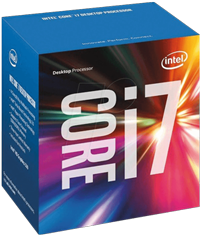

Процессор Intel Core i7-7700 3.6GHz/8GT/s/8MB s1151

Описание Intel Core i7-7700 3.6GHz/8GT/s/8MB (BX80677I77700) s1151 BOX
Новый процессор Intel Core i7-7700 7-го поколения, с кодовым названием микроархитектуры Kaby Lake. Предназначен для настольной платформы Intel LGA 1151. Принадлежит к семейству высокопроизводительных процессоров Core i7.
Intel Core i7-7700 производится по стандарту 14-нм техпроцесса, имеет 4 ядра, которые работают в 8 потоков со штатной тактовой частотой 3.6 ГГц, 4.2 ГГц в режиме Turbo Boost. Объем кэш-памяти 3 уровня равен 8 МБ. Имеет 2-х канальный контроллер памяти DDR4.
"Pentium" (укр. Пентіум) — торгова марка декількох поколінь мікропроцесорів сімейства x86, що випускаються корпорацією Intel з 22 березня 1993
року. Перший у серії Pentium був процесором Intel п'ятого покоління і прийшов на зміну Intel 80486 (який часто називали просто 486).
Процесори Intel Pentium користувалися величезною популярністю, і Intel вирішила не відмовлятися від марки Pentium, називаючи так і подальші процесори, хоча вони сильно відрізнялися від перших Pentium і навіть не відносилися до п'ятого покоління.
Такими є:
Pentium Pro — перший процесор шостого покоління, або ядро P6
Pentium II — комерційно успішний процесор шостого покоління
Pentium III — варіант Pentium II з дещо розширеною системою команд
Pentium 4 — процесор сьомого покоління
Pentium M — мобільний варіант чипа, на базі вдосконаленого ядра P6
Pentium D — двоядерний процесор Pentium 4
На заміну торговій марці Pentium йде нова торгова марка Intel Core. До святкування 20-ти річчя торгової марки «Pentium»,
корпорація Intel анонсувала випуск повністю розблокованого процесора з ядром Haswell (4-е покоління) в середині 2014 року.
Intel Core i3 — сімейство процесорів x86-64 від Intel, спрощена версія Intel Core i5. Всі існуючі моделі процесорів — двоядерні. Назва Core i3 нічого не означає, вона лиш продовжує серію брендів Core 2 і Core. Офіційно процесори цього сімейства оголошені у продаж з 7 січня 2010 року.
Позиціонуються як процесори початкового і середнього рівня ціни і потужності. В новому модельному ряду замінили морально застарілі Core 2 Duo на архітектурі Intel Core 2.
Мають вбудований графічний процесор і вбудований контролер пам’яті. Процесори Core i3 з’єднуються із чіпсетом через шину DMI або DMI 2.0. Підтримують інструкції — MMX, SSE, SSE2, SSE3, SSSE3, SSE4.1, SSE4.2.
Підтримують технології — Enhanced Intel SpeedStep Technology (EIST), Intel 64, XD bit (an NX bit implementation), Intel VT-x, Smart-Cache, а також технологію Hyper-threading, через що операційна система розпізнає даний двохпроцесорний процесор, як чотирипроцесорний.
Третє покоління Core i3 на базі мікроархітектури Ivy Bridge було представлено у серпні 2012 року.
Core i5 (кодова назва Lynnfield) — сімейство процесорів x86-64 від Intel. Процесори позиціонуються Інтелом, як масова альтернатива дорогим процесорам Core i7, які є процесорами для ентузіастів: Core i5 має двоканальний процесор пам'яті порівняно з триканальним у Core i7,
що значно зменшує кількість необхідних контактів і логіки.
8 вересня 2009 Intel оголосив про вихід на ринок лінійки процесорів Core i5, першим представником якої стала модель Core i5 750. Вихід процесора доповнився одночасним виходом нового чипсету P55 Express під роз'єм LGA1156.
Рішення виконане в одному чипі. P55 Express підтримує до 8 ліній PCI-Express 2.0, 14 портів USB 2.0 і шість портів SATA 2, а також програмний RAID за допомогою Intel Matrix Technology.
Нові чотириядерні процесори, раніше носили назву Lynnfield — це дещо змінена архітектура Nehalem. У них вперше вбудований PCI-Express 2.0 контроллер. Кількість каналів вбудованого контроллера пам'яті DDR3 скоротилася до двох.
Розмір кеш-пам'яті становить 8 мегабайт. Чипи призначені для установки в сокет LGA1156. Процесори підтримують технологію Intel Turbo Boost Technology. Зв'язок між чипсетом і процесором покладений на інтерфейс Direct Media Interface (DMI).
Intel Core i7 — родина процесорів x86-64 від Intel, у якій було вперше використано мікроархітектуру Intel Nehalem. Є продовженням родини Intel Core 2.
Всі три існуючі і дві майбутні моделі процесорів — чотирьохядерні.Ідентифікатор Core i7 застосовується і до початкової родини з робочою назвою Bloomfield, запущених в 2008 році.
Назва Core i7 нічого не означає, вона лиш продовжує серію брендів Core 2 і Core. Офіційно процесори цього сімейства оголошені у продаж з 17 листопада 2008 року.
Можливості Core i7
Дана мікроархітектура має багато нових можливостей.
Ось деякі з них в порівнянні з Core 2:
FSB замінена на QuickPath. Це означає, що материнська плата має використовувати чипсет, що підтримує QuickPath.
Контролер пам'яті:
Контролер пам'яті знаходиться в самому процесорі, а не в окремому чипсеті. Таким чином, процесор має прямий доступ до пам'яті.
Частина де знаходиться контролер називається позаядерною, тому контролер функціонує на відмінній від ядер тактовій частоті.
Як наслідок розміщення контролера пам'яті, Core i7 підтримує лише DDR3.
Контролер пам'яті підтримує до 3-х каналів пам'яті, і в кожному може бути один або два блоки пам'яті DDR3 DIMM. Тому материнські плати для Core i7 підтримують до 6 планок пам'яті, а не 4, як Core 2.
Кеші:
32 КБ L1 кешу для інструкцій і 32 КБ L1 кешу для даних на ядро.
256 КБ L2 кешу (комбіновано для інструкцій і даних) на ядро.
8 МБ L3 кешу (комбіновано для інструкцій і даних) на всі ядра.
Core i7 є одно
кристальним: всі чотири ядра, контролер пам'яті, і всі кеші знаходяться на одному кристалі.
«Turbo Boost» технологія, що дозволяє всім активним ядрам інтелектуально збільшувати свою частоту кроками по 133 MHz понад базову частоту допоки процесор не перевищив норм по тепловиділенню і енергоспоживанню.
Ядра Core i7 можуть використовувати Hyper-threading, коли за один раз іноді виконуються інструкції двох різних ниток виконання.
Ця можливість була представлена в архітектурі NetBurst, але від неї відмовились в Core.
Core i7 не призначений для багатопроцесорних материнських плат, тому присутній лише один інтерфейс QuickPath.
45 нм техпроцес.
731 мільйон транзисторів.
Площа кристалу 263 мм².
Система керування живленням може перемикати у режим відсутності живлення невикористовувані обчислювальні ядра процесора.
Підтримка наборів команд SSE4.2 і SSE4.1.